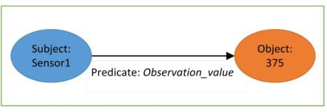

Fire weather indices are widely used to measure fire danger and are used to issue bushfire warnings. The importance of forest fire detection has increased day by day. The proposed fire management system acts according to the situation, supports reasoning and the general semantics of the open-world followed by all the ontologies. There is a need for a comprehensive and proactive system to forecast the possibility and severity of forest firethreateningof forestfire. This work presents a Web-based mapping interface to help users visualize the changes in fire weather indices over time.
 A Decision Support System (DSS) is a computer-based information system that integrates models and data to handle unstructured problems with multiple user engagement via a friendly user interface. The SSN Ontologybased DSS for forest fire management is proposed here to prevent different types and stages of fires that help to save the natural resources, life, global warming, etc. The proposed system is specifically built to meet the following goals and user. To create a collection of online services that facilitates the fire weather conditions in a specific location to be searched.
Jerome V et al. offer an autonomous approach for detecting early smoke sources using landscape photos in real-time. This work focuses on segmentation techniques to extract pixels’ persistent dynamical envelopes. Then, based on an analysis of the velocity of smoke plumes, it gives the primary criterion for smoke recognition. The product of this well-thought-out project achieves a fire detection rate of 99.4 %. According to indigenous peoples, traditional fire control can supplement existing wildfire mitigation measures.
Using OWL constructs, the SSN forest fire ontology models the ideas, relationships, attributes, data types and data types, and water forest fire detection. SSN has established the basic concepts and relationships (features, observations,. observations, characteristics, systems, and sensors) and aligned them with the DOLCE-Ultra Lite (DUL) ontology It bases its calculations on a subject-predicate relationship (subject–predicate–object) As shown in Fig. 2 the triple represents the observed value(375) of a sensor.
The model checker gives the complete precautionary measure detection according to the situation. The ranges included in this Model Checker from the Canadian Forest Management System are categorized in different precautionary measures (i.e., low, high, difficult, etc.) Also checks all Precautionary steps through Algorithm 1.4. For more accurate result performance, this model is converted into SSN Ontology which has an additional feature to. The fire management unit takes action accordingly.
The FWI checker is based on a model for Forest Fire. It has an algorithm for checking FFMC, DC, DMC, FFMC and FWI. The algorithm requires input values, rain, windspeed and windspeed. It also has a formula for checking the FWI's fire intensity and fire intensity. It can also be used to check for rain or wind speed. It is a checker for the Forest Fire checker that is designed for the forest fire. The model has been described as FWI’s model for forest fires.
The Web Rule Language or SWRL6 combines the Web Ontology Language and the Rule Markup Language. It provides a high-level abstract structure for Horn-like rules. All rules are expressed in OWL concepts (classes, properties, individuals) A total of 42 rules are included in this model. The FFMC rating is a numerical rating that shows the combustibility and effectiveness of soft fills. It derived from yesterday’s FFMC data and noontime temperature, wind speed, relative humidity, and 24-hthe rainfall.
Based on these ranges, the Inference rules are made to restrict the ontology, which is shown in Table 3.6. According to this range, ”Mop-up-Needs” are observed (i.e., little, moderately, difficult extensive, etc.) Based on this range of ‘mop up-needs’, a fire support in fire is ”little” or ‘moderate’ If mop up needs of deep organic material are greater than ‘20”, then supporting a fire is difficult.
Building Up Index (BUI) is a numerical evaluation of the total amount of gasoline available for a start that connects DMC apologeticand DC. A rating over 40 shows that fuel levels become high open for a fire. Rating over 60 shows that fire utilization can be extraordinarily high, and fire control will be risky. Ranges belong 0 to unlimited, but they are subdivided into five groups. Based on these ranges, the Inference rules are made to restrict the ontology.
The Fire Weather Index (FWI) is a numerical firepower rating that combines ISI and BUI. The FWI shows moderate intensity and is sensible as a general record of fire chance. Based on these ranges, the Inference rules are made to restrict the ontology, which is shown in Table 6. SWRL rules for Initial Spread Index are presented in Table 5. Inference Rules for Initial Fire Index. Rate of Spread Index, Fire Intensity Index and Fire Weather Weather Index.
SWRL rules for Fire Weather Index, Wind Speed, Rain and Wind Speed are described in Table 6. The ontology is built via seven step process: Determine the ontology’s domain and scope. Classify the classes and their hierarchies in the Ontology. Then define data properties and object properties for fire detection. In Figure 9, they make the rules for detection by SWRL using SWRL. In Figure 10, they show how the rules are applied to detect fire and how they are applied.
5 depicts the user interface and how users interact with the forest fire management system using Sparql queries. It also shows how the data source can be mapped into the Resource Description Framework and then presented in graphical format using Onto Graph (also called Knowledge Graph7) Inference rules are used to give restrictions on the knowledge graph. To obtain a result, use a SparQL query. To obtaina result, receive a result. To
The Core module: Core Classes. Core classes: Observation, Unit of Measure, Sensor Output, Sensor Type, Property Type, Unit Of Measure and Data Properties. Core modules: Core Class, Core Classes, Core Objectives, Core Elements. Core Classes: Core Elements, Core Features, Core Objects, Core Data Properties, Core Components, Core Modules. Core Elements: Data properties, Core Element, Core Observations, Core Units, Core Classes, Core Models. Core Features: Fire weather index, Fire Weather Index, Fire Response System, Fire Data Collection, Fire Service Service, Fire Management System. Core Data Collection: Fire Service Data Collection.
The ssn:WindSpeed tell about wind speed rate. The sSn:Temperature comes under dataproperty which tells about temperature according to the locations. : Relativehumidity tells about different humidity. “The ssn :rain tells that if it rains there is no chance of fire activity.” -”‚. �. ‚. -‚“- ” is a reference to SSN ontology using Onto Graph.
Framework Object property using Protege tool is a property that links a class description to a property. It asserts that the subjects of property statements belong to the class extension indicated by the class. The DifficultyofControle is an object property which represents the level of control of fire. The RateofSpread tells about how fast fire spreads in the limit of time. The FireIntensity this class tells about the speed of fire expansion level. The startRaining this object property represents rain. The WindSpeed represents wind speed about any location.
SWRL rules the working process for sensor 3 output. It gives the Difficulty level of ignition potential in that area (as per Fig.10) Figure 13 shows that the fine energizes’ overall simplicity of initiation and combustibility. Protege tool for sensor. 3 gives the difficulty of ignition. Potential of the sensor 3 sensor has been defined as “protege’s” tool for. sensor 3. Figure 10 shows that SWRL. rules the. working process.
Fire Weather Index Difficulty of Control and MoupNeeds are shown in Table 4. The FWI shows the sensible intensity of a fire. It is a numerical rating of fire power that joins ISI and BUI. A grade of more than 40 indicates that fuel levels are high when the vehicle starts. A rating over 60 shows that the utilization of fuel is extraordinarily high and fire control is to be risky. A FWI of over 30 is considered remarkable, as shown in Table 6.
The Mop up Needs code shows the significance of the substance’s texture to fire. This rating is usually used to describe the substance's sogginess, as shown in Table 3. The suggested solution takes data from an observational process and maps it to the SSNO so that rules-based inference can be performed. The forest fire management system is a web-based platform that enables users to perform various tasks related to the management of forests. It consists of various modules that can be used to collect and process data.
The discovery service consists of a collection of data collected by the software system, which includes monitoring stations, observation products, and warning systems. Table 8.1 shows the results of a query for a monitoring station that illustrate the outcomes of the fire alert Fig.14 displays the results. Table 7 shows the result of a SPARQL query for the system. Table 10 shows that the SSN ontology is better than other Ontologies. Table 9 shows that SSNO is an RDF query language for RDF queries.
SPARQL allows for extendable value testing and query constraints based on the underlying RDF graph. The output of this query is in URI grotesque formats. According to the query result, they decide the rate of fire spread in different locations according to the sensor id. The fire behavithe indices (ISI, BUI, and FWI) predict the initial spread, total fuel availability, and fire intensity. In Fig.15 the query results show that rain grater than 1 of all sensor id. This result indicates that in case of rain no chance of fire in that location.
A hot, but slow-moving fire in general is most likely to erupt on a windless windless day. After a long, dry time, this is the type of fire that is likely to happen after a long dry time. High-intensity fires are a possibility. After a dry period, a high-intensity fire is a possibility. A high-speed fire is also a possibility in the area. A low-level fire is likely not to be deep seated or a deep-seeded fire.
An ontology for forest fire detection is employed in the forest fire management system. The system uses Montesinho’s natural park data specifications to describe various pollution and fire safety alert details. The proposed rules introduce a conceptual framework for the query results integrated into a data observation system. For reasoning, the system must still be able to consult external semantic sensor web services. For more information on forest fires, the authors suggest merging existing ontologies for more conditions to gather observational data and extract more meaningful information.
An early warning fire detection system based on a laser spectroscopic carbon sensor using a 32-bit system-on-chip’s. ‘Gi.i.s.assisted wireless sensor networks for forest fires,” In: Proc.24th international conference on Scientific and Statistical Database Management (SSDBM 12), 2012, pp. 618-621. “The progress of operational forest fire monitoring with infrared remote sensing”, J. Forestry Res. Res., vol. 28, no. 2, pp 215-229, Mar. 2017.
Researchers have proposed a method for mapping sensor data to SSN ontology. The method is called MSSN-Onto: an ontology-based approach for flexible event processing in Multimedia Sensor.Networks. Available online http://www.w3.org/2005/Incubator/SSN/(Access on Sept. 5th, 2021). Glypho-Pen˜ uela, A., Hoekstra, R. R. Haekstra: Lossless conversion and streaming of MIDI to RDF and back.
The Canadian forest fire weather index is based on the Canadian Forest Fire Weather Index. The Forest 4.0: Digitalization of forest using the Internet of Things (IoT) is the result of a study by Masinda Masinda, M.M., Li, F., Qi, L., Sun, L. and Hu, T., 2021. They will use the index to assess forest fire risk estimation in a typical temperate forest in Northeastern China using the Canadian Fire Weather index: case study.